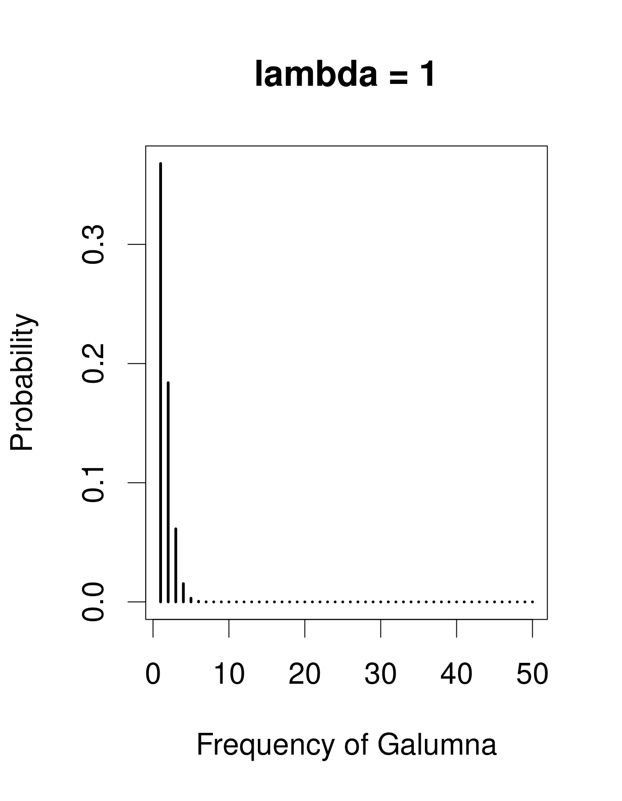
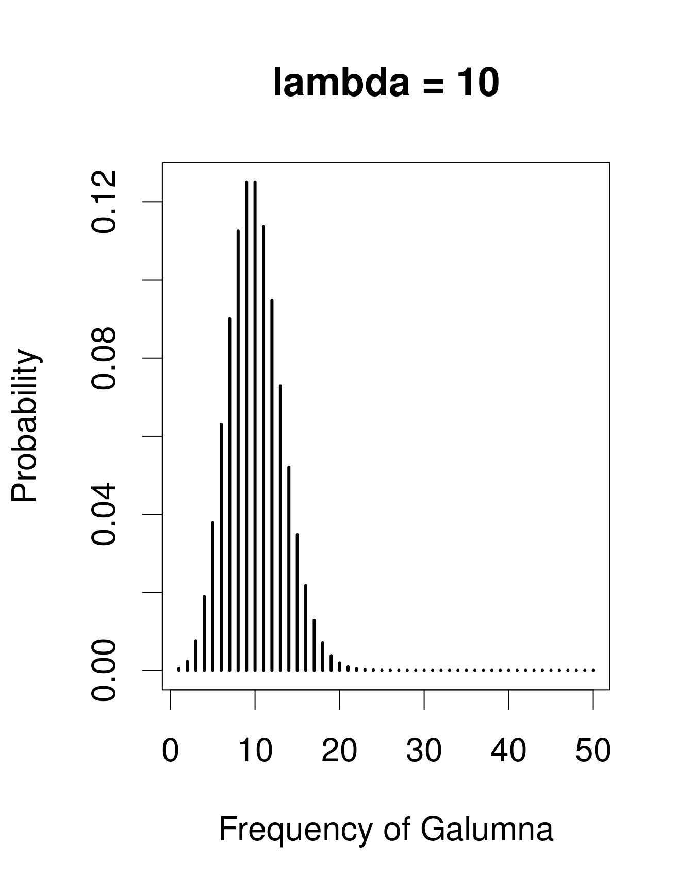
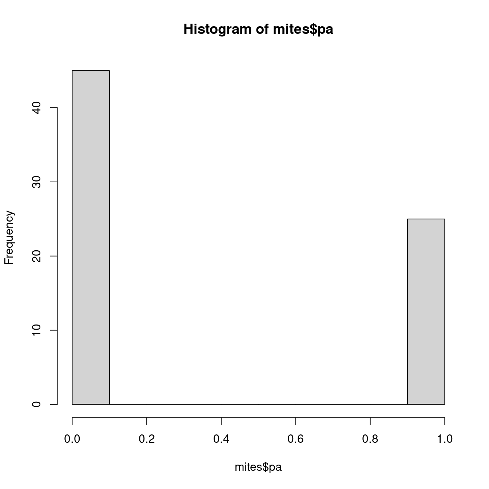
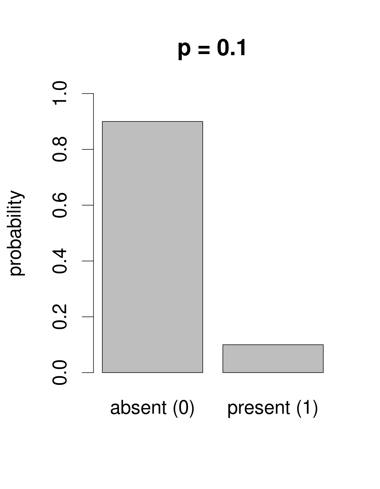
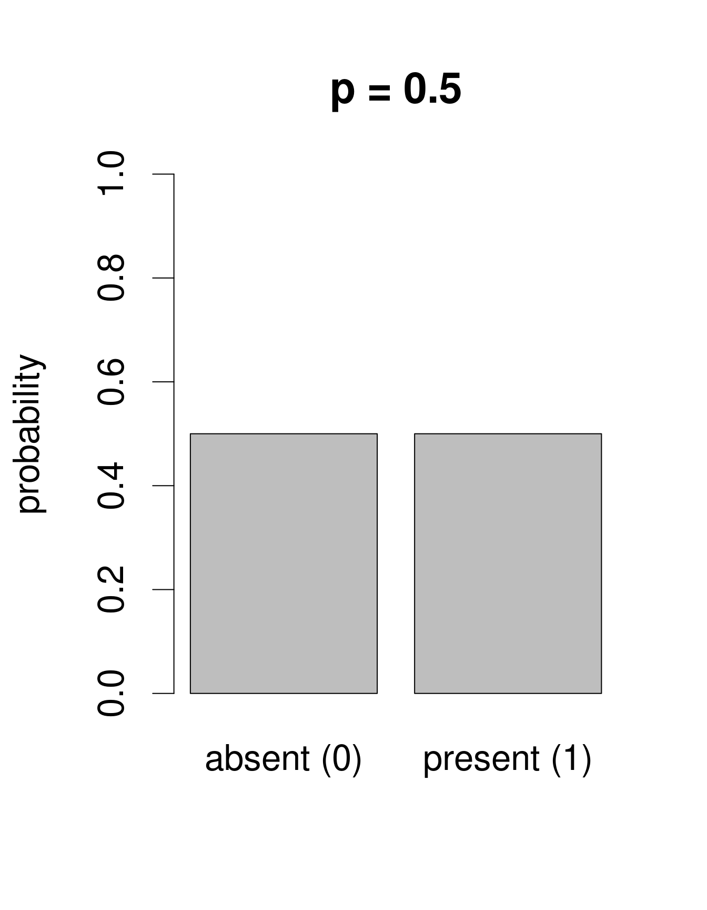
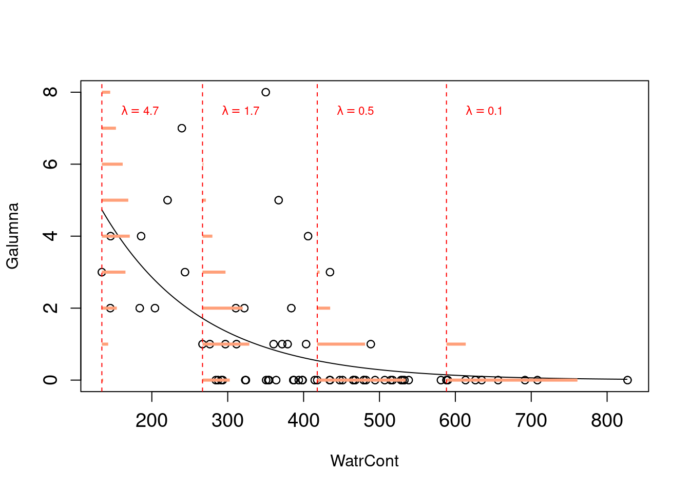

Chapter 7 The distributions of biological data
Statisticians have described a multitude of distributions that correspond to different types of data. A distribution provides the probability of observing each possible outcome of an experiment or survey (for example, abundance = 8 Galumna is one such “outcome” of a survey). Discrete distributions have a range that only includes integers, while continuous distributions have a range that also includes fractions (the normal distribution is an example of a continuous distribution). All distributions have parameters that dictate the shape of the distribution (for example \(\mu\) and \(\sigma^2\) for the normal distribution).
For a good overview of statistical distributions, we recommend that you refer to Chapter 4 in Ben Bolker’s Ecological Models and Data in R. Here, we briefly discuss a few distributions that are useful for ecologists and generalized linear modeling.
We have already seen that our response variable “Galumna abundance” can only take integer values. Abundance, therefore, follows a discrete distribution, with no fractions in its range.
A useful distribution to model abundance data is the Poisson distribution, named after Siméon Denis Poisson. The Poisson distribution is a discrete distribution with a single parameter, \(\lambda\) (lambda), which defines both the mean and the variance of the distribution (i.e. the mean and the variance of a Poisson distribution are equal). Here are 3 examples of Poisson distributions with different values of \(\lambda\), corresponding in this case to the mean number of Galumna observed in a fictive set of samples:
# examples of Poisson distributions with different values of lambda
par(cex = 2)
x = seq(1, 50, 1)
plot(x, dpois(x, lambda = 1), type = "h", lwd = 3, xlab = "Frequency of Galumna", ylab = "Probability", main = "lambda = 1")
plot(x, dpois(x, lambda = 10), type = "h", lwd = 3, xlab = "Frequency of Galumna", ylab = "Probability", main = "lambda = 10")
plot(x, dpois(x, lambda = 30), type = "h", lwd = 3, xlab = "Frequency of Galumna", ylab = "Probability", main = "lambda = 30")
Note that at low \(\lambda\) values (when the mean is close to zero), the distribution is skewed to the right, while at large \(\lambda\) values (large mean) the distribution is symmetrical. The variance increases with the mean, predicted values are always integers, and the range of a Poisson distribution is always strictly positive; all of these properties are useful to model count data, for example abundance of a given taxon, number of seeds in a plot.
Our variable mites $Galumna seems to follow a Poisson distribution with a low value of \(\lambda\) (indeed, if we calculate the mean abundance of Galumna across all samples using the function mean(), we find that it is close to zero):
## [1] 0.9571429Our variable $pa (presence-absence) takes yet another form. It consists of only zeros and ones, such that a Poisson distribution would not be appropriate to model this variable.

We need a distribution with a range that only includes two possible outcomes: zero or one. The Bernoulli distribution is such a distribution. It is often the first distribution that students of statistics are introduced to, for example when discussing the probability of obtaining the outcome “heads” when flipping a coin. The Bernoulli distribution has only one parameter, \(p\), the probability of success (i.e. the probability of obtaining heads on a coin flip). If we consider that each of our samples is equivalent to a coin toss, then we can use the Bernoulli distribution to calculate the probability of obtaining the outcome “Galumna present” (1) vs. “Galumna absent” (0). Here are some examples of Bernoulli distributions with various probabilities of presence (\(p\)):

We can calculate the number of sites where Galumna is present out of the total number of sites to get an idea of what \(p\) might be in our case:
## [1] 0.3571429\(p\) for the variable mites $pa is more or less 0.36, such that roughly twice as many sites have the outcome “Galumna absent” (0) than the outcome “Galumna present” (1).
When there are multiple trials/coin tosses, the Bernoulli distribution expands into the binomial distribution, which has the additional parameter \(n\), corresponding to the number of trials. The binomial distribution predicts the probability of observing a given proportion of successes, \(p\), out of a known total number of trials, \(n\). “Successes” can be anything from taxon occurrence, number of surviving individuals out of a sample, etc. Imagine that instead of only working in the Laurentians, we took 50 mite samples at each of 30 regions across Canada. In each sample from each region, we determine if Galumna is present or absent. We could model this data using a binomial distribution with \(n\) = 50 samples (i.e. “trials” or coin flips where Galumna can be either present or absent) and \(p\) = the average proportion of samples in which Galumna is present. We would have 30 data points, corresponding to the 30 regions. Here are some examples of binomial distributions with \(n\) = 50 and 3 different values of \(p\):
Note that the binomial distribution is right-skewed at low \(p\) values but left-skewed at high \(p\) values. This is the main difference with the Poisson distribution: the binomial distribution has an upper limit to its range, corresponding to the number of trials, \(n\). Consequently, the binomial distribution is often used to model data where the number of successes are integers and where the number of trials is known.
For example, we could use the binomial distribution to model our proportion data, where each individual mite in a sample could be considered a trial, and if the mite is a Galumna individual then the trial is a success. In this case, the number of trials \(n\) varies among our 70 samples based on the total number of individuals in the sample, while \(p\), the probability of success, is given by the proportion of Galumna in each sample.
Why are we discussing all of these distributions? Because they can be used to replace the normal distribution when calculating predicted values in a linear model.
For example, we could use the Poisson distribution and model our abundance data with the following equation:
\[Y_i \sim Poisson(\lambda = \beta_0 + \beta_1X_i)\]
Note that \(\lambda\) varies as a function of \(X\) (water content), meaning that the residual variance will also vary with \(X\). This means that we just relaxed the homogeneity of variance assumption! Also, predicted values will now be integers instead of fractions because they will all be drawn from Poisson distributions with different \(\lambda\) values. The model will never predict negative values because Poisson distributions have strictly positive ranges. By simply switching the distribution of error terms (\(\varepsilon\)) from normal to Poisson, we solved most of the problems of our abundance linear model. This new model is almost a Poisson generalized linear model, which basically looks like this:

Probabilities of observations/predicted values (in orange,
as for the lm() model above) are now integers, and that both the variance and the mean of the distribution decline as \(\lambda\) decreases with increasing water content.
Why is the fitted line of predicted values curved? Why is this called a “generalized” linear model?